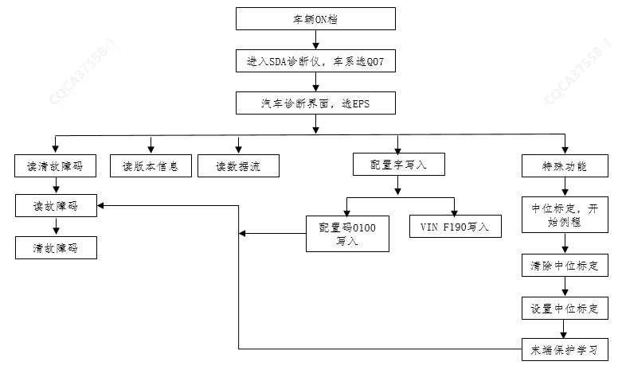

Процедура заводской конфигурации EPS и калибровки центрального положения угла поворота показана на рисунке ниже:

1. На данной модели автомобиля датчик угла поворота рулевого колеса (SAS) встроен внутрь EPS; сигналы угла поворота рулевого колеса, используемые такими системами, как ESC/ESP/ACC/камера заднего вида и т. д., предоставляются системой EPS, поэтому при появлении в вышеуказанных системах связанных с датчиком угла поворота неисправностей, таких как «Датчик угла поворота не откалиброван», необходимо проверить исправность системы EPS и выполнить повторную калибровку центрального положения EPS.
2. При замене EPS в процедуре калибровки выберите специальные функции для выполнения калибровки центрального положения, процедуры обучения защите крайних положений и операций настройки конфигурационных слов; если замена EPS не производилась, но требуется повторная корректировка центрального положения датчика угла EPS или центрального положения рулевого колеса, необходимо войти в специальные функции диагностического прибора для EPS, сначала выполнить сброс центрального положения, затем выбрать калибровку центрального положения и в завершение выполнить операцию обучения защите крайних положений; после выполнения операций в обязательном порядке выполнить сброс кодов неисправностей и чтение кодов для системы EPS с целью подтверждения отсутствия неисправностей в системе.
3. После повторной калибровки центрального положения угла EPS необходимо выполнить обучение защите крайних положений; конкретный метод обучения: повернуть рулевое колесо из центрального положения в крайнее левое положение, удерживать в течение времени ≥ 1 s при усилие на руле ≥ 6 Nm; затем повернуть рулевое колесо в крайнее правое положение, удерживать в течение времени ≥ 1 s при усилие на руле ≥ 6 Nm; в завершение вернуть рулевое колесо в положение прямолинейного движения (центральное).
4. При отсутствии неисправностей в системе контрольная лампа неисправности EPS погаснет только после выполнения для EPS конфигурации слов, калибровки центрального положения угла и обучения защите крайних положений; убедившись, что контрольная лампа неисправности погасла, с помощью диагностического прибора удалить сохраненные коды неисправностей для EPS и связанных компонентов.